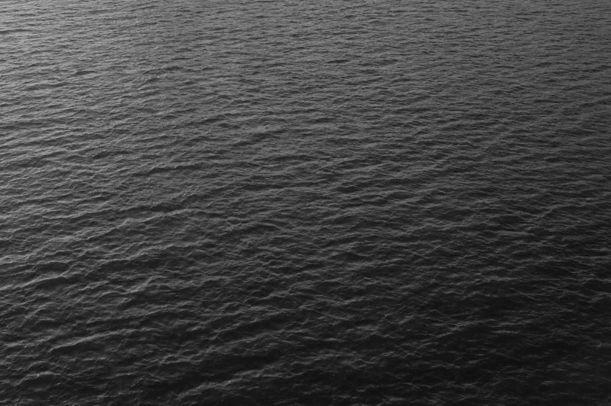

MISSION
CREATING A KIND WORLD THROUGH CREATIVITY
クリエイティビティでやさしい世界をつくる
創造性を、「自己表現」から「関心の技術」へ変える。
関心を増やし、関係を結び直していく。
私たちが大事にしたいのは「関心」。
つくる過程で対象に関心を払い、無関心だった状態から一歩進むこと。
そして創造を、他者のために、自然のためにひらいていくこと。
自己の発散で終わらせず、調和が取れた世界を目指してクリエイティブを用いる。
つくる過程の中で、デザインする対象に関心を払い、無関心だった状態から前進する。
創造することを、他者のために、自然のために、開いていく。

VISION
SHEDDING LIGHT
見過ごされてきたものに光を与える
つくるを通して、本質に近づく。
根本を問い直す視点を持つこと。知覚できる物事を増やすこと。前提や常識を疑い、本質を追い続けること。
当たり前にあるものを今一度考えてみる。その大切さを知り、「このようにこうだ」と実践できる学びを持ち帰れるように。

VALUE
- 1. 自然が最先端だ
- 2. 見えていなかったものを、見る
- 3. ひとつの手段に、依存しない
